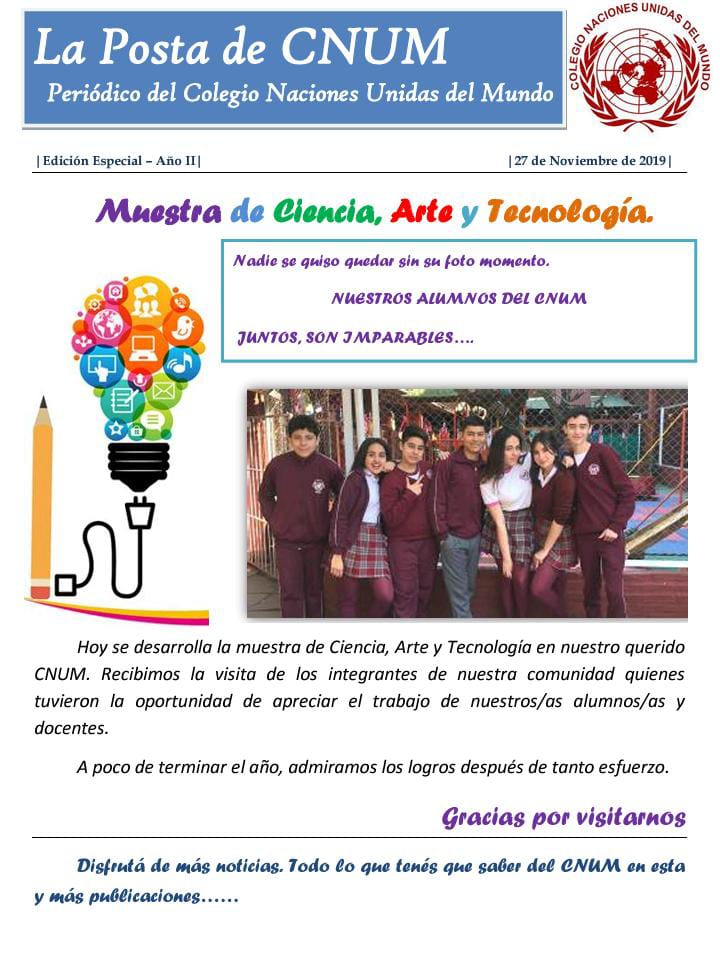
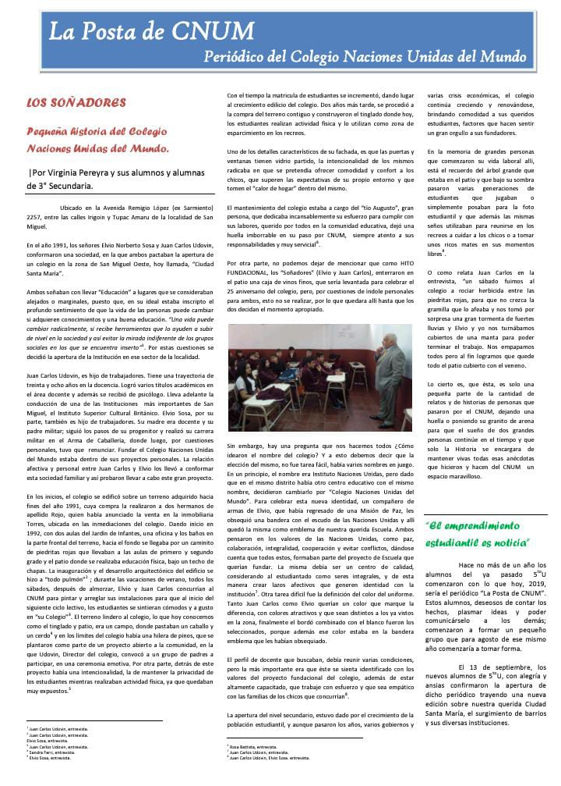

En el año 2019, el grupo de estudiantes de 5to año, junto a un grupo de docentes, participaron de la feria distrital. Para ello, los pequeños gigantes, comenzaron la gran tarea de volver a escribir paginas del diario local, que en ese momento se denominaba "La Posta del Cnum", de modo que se dividieron tareas a fin de lograr poner en marcha el proyecto.
Con gran exito, se escribieron cuatro paginas de contenidos interesantes...
como se pueden observar en la imagen...

Pero eso no era todo, la profesora Virginia Pereyra, junto a sus estudiantes (en ese entonces) de 3er año, realizaron dos entrevistas muy importantes.
Estas entrevistas se realizaron a las dos personas mas importantes de nuestra Institución, los señores: Elvio Sosa y Juan Carlos Udovin; quienes amablemente prestaron de su valioso tiempo, permitiendo recaudar la mayor informacion para lograr obtener la historia de como llego a fundarse nuestro querido Colegio Naciones Unidas del Mundo.
Historia que se puede observar en la siguiente Imagen...

texto que tambien podemos leer en el siguiente enlace...
"Los Soñadores"